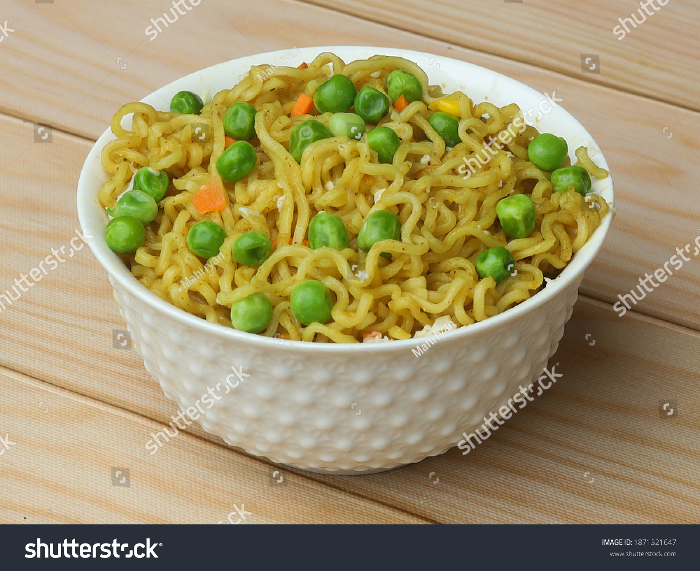

Spicy Maggi + Peas

Description
Ingredients
- 1 piece Special Masala Maggi noodles + Packet
- 1 cup green peas (fresh or frozen)
- 1 cup water
- Salt to taste
- Chilli powder to taste
Steps
- Boil the water in a pan.
- Add salt and chilli powder to taste.
- Add the green peas to the boiling water and cook for 2-3 minutes
- Add the Maggi noodles and the tastemaker (spice mix) from the packet to the boiling water.
- Cook for 2-3 minutes until the noodles are soft and the water is mostly absorbed.
- Stir well to combine and ensure the noodles are evenly coated with the spices
- Serve hot and enjoy your spicy Maggi with peas!
Back to home page